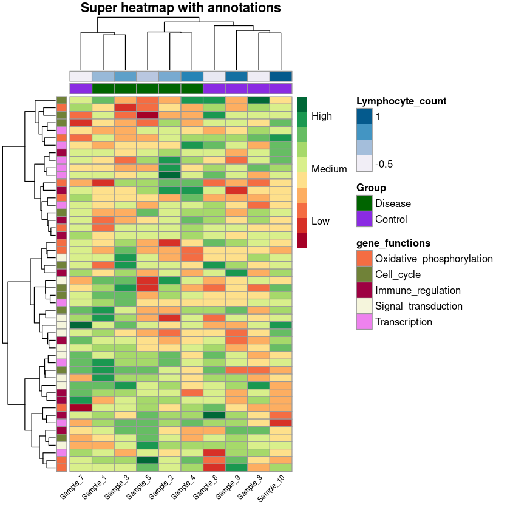
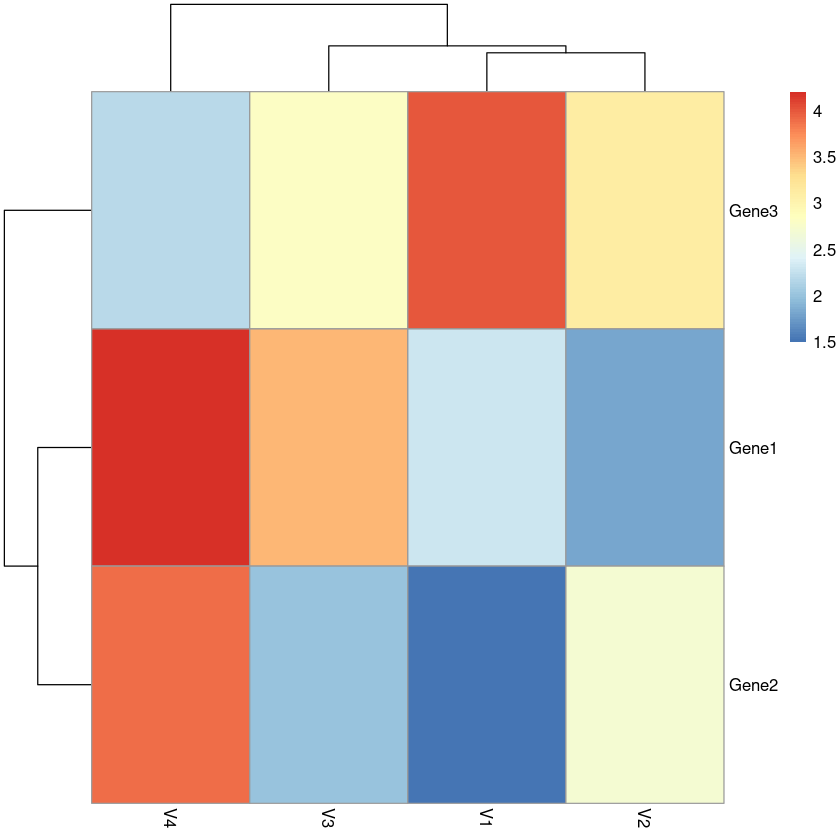
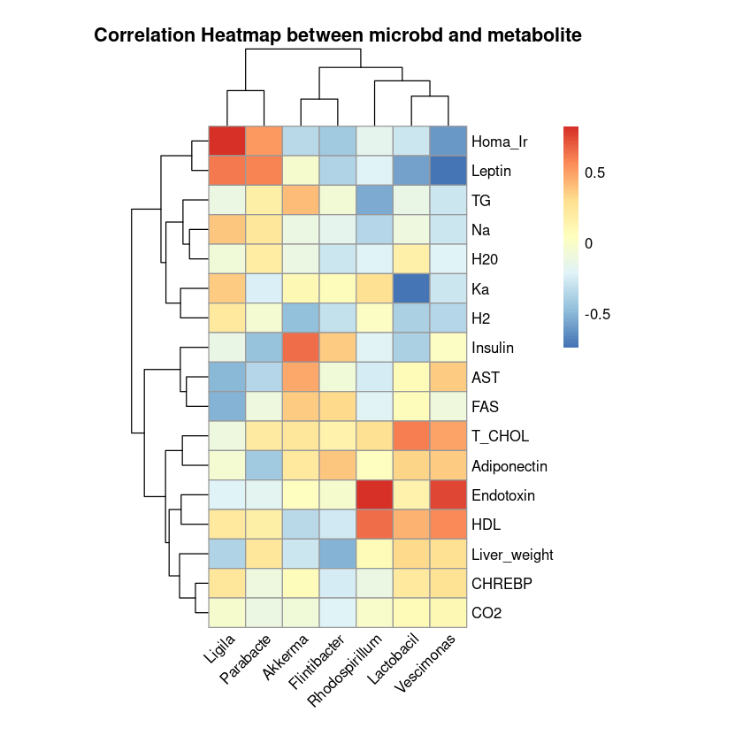

── Attaching packages ───────────────────────────────────────────────────────────────────────────────────────────────────── tidyverse 1.3.1 ──
✔ ggplot2 3.4.1 ✔ purrr 1.0.1
✔ tibble 3.2.0 ✔ dplyr 1.1.0
✔ tidyr 1.3.0 ✔ stringr 1.5.0
✔ readr 2.1.4 ✔ forcats 1.0.0
── Conflicts ──────────────────────────────────────────────────────────────────────────────────────────────────────── tidyverse_conflicts() ──
✖ dplyr::filter() masks stats::filter()
✖ dplyr::lag() masks stats::lag()
Import
Example1
# Create sample data ===================================================
set.seed(43)
data <- matrix(rnorm(500), 50, 10)
colnames(data) <- paste0("Sample_", 1:10)
rownames(data) <- paste0("Gene_", 1:50)
head(data)| Sample_1 | Sample_2 | Sample_3 | Sample_4 | Sample_5 | Sample_6 | Sample_7 | Sample_8 | Sample_9 | Sample_10 | |
|---|---|---|---|---|---|---|---|---|---|---|
| Gene_1 | -0.03751376 | 0.2937911 | -0.85262613 | 0.6780038 | -1.2208217 | 0.7869834 | -1.40953704 | 1.124523697 | 0.9924993 | 2.0304134 |
| Gene_2 | -1.57460441 | 0.4005673 | 0.01941194 | 0.5387474 | 0.3632384 | 0.3111118 | 0.25783267 | -0.478325716 | -0.1422318 | -0.2574697 |
| Gene_3 | -0.48596752 | -0.1745172 | -2.37084068 | -0.7893876 | -1.6752909 | 0.9192161 | 0.75005975 | 0.440113300 | -1.1419259 | 0.1863076 |
| Gene_4 | 0.46518623 | 0.2400995 | 0.85504226 | 1.2212672 | 2.7282491 | -1.4367307 | -0.08023358 | -0.699330119 | 1.4048809 | -1.1354877 |
| Gene_5 | -0.90409807 | -1.2410525 | 1.38602057 | -1.6071631 | -1.3018109 | -0.3908323 | 0.30627901 | -0.487474084 | -0.7002450 | -1.2086034 |
| Gene_6 | -0.27743280 | -2.0873554 | 0.85888042 | -0.2446592 | -0.9075520 | 1.0514593 | 0.27197678 | -0.006470896 | 0.6484149 | -0.4279669 |
# Annotations ===================================================
# create a data frame for column annotation
ann_df <- data.frame(Group = rep(c("Disease", "Control"), c(5, 5)),
Lymphocyte_count = rnorm(10))
row.names(ann_df) <- colnames(data)
head(ann_df)| Group | Lymphocyte_count | |
|---|---|---|
| <chr> | <dbl> | |
| Sample_1 | Disease | 0.13097892 |
| Sample_2 | Disease | 0.32708392 |
| Sample_3 | Disease | 0.50072083 |
| Sample_4 | Disease | 0.89569721 |
| Sample_5 | Disease | -0.08225117 |
| Sample_6 | Control | -0.48868421 |
gene_functions_df <- data.frame(gene_functions = rep(c('Oxidative_phosphorylation',
'Cell_cycle',
'Immune_regulation',
'Signal_transduction',
'Transcription'), rep(10, 5)))
row.names(gene_functions_df) <- rownames(data)
head(gene_functions_df)| gene_functions | |
|---|---|
| <chr> | |
| Gene_1 | Oxidative_phosphorylation |
| Gene_2 | Oxidative_phosphorylation |
| Gene_3 | Oxidative_phosphorylation |
| Gene_4 | Oxidative_phosphorylation |
| Gene_5 | Oxidative_phosphorylation |
| Gene_6 | Oxidative_phosphorylation |
ann_colors <- list(
gene_functions = c("Oxidative_phosphorylation" = "#F46D43",
"Cell_cycle" = "#708238",
"Immune_regulation" = "#9E0142",
"Signal_transduction" = "beige",
"Transcription" = "violet"),
Group = c("Disease" = "darkgreen",
"Control" = "blueviolet"),
Lymphocyte_count = brewer.pal(5, 'PuBu')
)- $gene_functions
- Oxidative_phosphorylation
- '#F46D43'
- Cell_cycle
- '#708238'
- Immune_regulation
- '#9E0142'
- Signal_transduction
- 'beige'
- Transcription
- 'violet'
- $Group
- Disease
- 'darkgreen'
- Control
- 'blueviolet'
- $Lymphocyte_count
-
- '#F1EEF6'
- '#BDC9E1'
- '#74A9CF'
- '#2B8CBE'
- '#045A8D'
# Base heatmap ===================================================
heat_plot <- pheatmap(data,
col = brewer.pal(10, 'RdYlGn'), # choose a colour scale for your data
cluster_rows = T, cluster_cols = T, # set to FALSE if you want to remove the dendograms
clustering_distance_cols = 'euclidean',
clustering_distance_rows = 'euclidean',
clustering_method = 'ward.D',
annotation_row = gene_functions_df, # row (gene) annotations
annotation_col = ann_df, # column (sample) annotations
annotation_colors = ann_colors, # colours for your annotations
annotation_names_row = F,
annotation_names_col = F,
fontsize_row = 10, # row label font size
fontsize_col = 7, # column label font size
angle_col = 45, # sample names at an angle
legend_breaks = c(-2, 0, 2), # legend customisation
legend_labels = c("Low", "Medium", "High"), # legend customisation
show_colnames = T, show_rownames = F, # displaying column and row names
main = "Super heatmap with annotations") # a title for our heatmap
Example2
ref: https://jokergoo.github.io/2020/05/06/translate-from-pheatmap-to-complexheatmap/
가상의 유전자 데이터를 예시로 들어보자.
유전자 발현 데이터는 유전자와 실험 조건 간의 발현 수준을 나타내는 행렬로서, 각 행은 다른 유전자를 나타내고 각 열은 다른 실험 조건 또는 시간 포인트를 나타내며,
각 셀은 해당 유전자의 특정 실험 조건에서의 발현 수준을 나타내는 숫자이다.
# 필요한 라이브러리 로드
library(pheatmap)
# 가상의 유전자 발현 데이터 생성 (3개의 유전자, 4개의 실험 조건)
gene_names <- c("Gene1", "Gene2", "Gene3")
experiment_conditions <- c("Condition1", "Condition2", "Condition3", "Condition4")
expression_data <- matrix(
data = c(
2.3, 1.8, 3.5, 4.2,
1.5, 2.7, 2.0, 3.9,
4.0, 3.1, 2.8, 2.2
),
nrow = 3,
ncol = 4,
byrow = TRUE
)
# 행렬을 데이터 프레임으로 변환
expression_data_df <- as.data.frame(expression_data, row.names = gene_names, col.names = experiment_conditions)
# pheatmap 함수로 히트맵 생성
pheatmap(expression_data_df, cluster_rows = TRUE, cluster_cols = TRUE)
율이예제
미생물이랑 군 별 대사 지표랑 상관관계를 나타내고 싶음. (논문의 Fig와 유사하게 – 미생물이 가로축으로 갔으면 좋겠음.)
icrobd_df <- data.frame(Akkerma = rnorm(10, 1000, 10),
Lactobacil = rnorm(10, 400, 40),
Ligila = rnorm(10, 300, 50),
Rhodospirillum = rnorm(10, 1000, 20),
Parabacte = rnorm(10, 1500, 30),
Vescimonas = rnorm(10, 1200, 10),
Flintibacter = rnorm(10, 300, 5)
)
metabolite_df <- data.frame(Endotoxin = rnorm(10, 400, 10),
Insulin = rnorm(10, 1000, 40),
Homa_Ir = rnorm(10, 600, 50),
HDL = rnorm(10, 10, 20),
AST = rnorm(10, 140, 30),
TG = rnorm(10, 10, 10),
T_CHOL = rnorm(10, 40, 5),
Leptin = rnorm(10, 30, 4),
Adiponectin = rnorm(10, 14,2),
Liver_weight = rnorm(10, 2, 1),
FAS = rnorm(10, 2, 4),
CHREBP = rnorm(10, 40, 2),
Ka = rnorm(10, 30, 5),
CO2 = rnorm(10, 20, 4),
Na = rnorm(10, 40, 5),
H2 = rnorm(10, 24, 5),
H20 = rnorm(10, 4, 100)
)
df_ <- cbind(icrobd_df, metabolite_df)# 데이터프레임 결합
df_ <- cbind(icrobd_df, metabolite_df)
# 상관계수 행렬 생성
cor_matrix <- cor(df_)
# p-value 행렬 초기화
p_value_matrix <- matrix(1, nrow = ncol(df_), ncol = ncol(df_))
# p-value 계산
for (i in 1:(ncol(df_) - 1)) {
for (j in (i + 1):ncol(df_)) {
test_result <- cor.test(df_[, i], df_[, j])
p_value_matrix[i, j] <- p_value_matrix[j, i] <- test_result$p.value
}
}
colnames(p_value_matrix) <- colnames(df_)
rownames(p_value_matrix) <- colnames(df_)
# p_value_matrix
our_pmatrix <- p_value_matrix[colnames(metabolite_df),colnames(icrobd_df)]
our_cormatrix <- cor_matrix[colnames(metabolite_df),colnames(icrobd_df)]
# 유의수준 설정
significance_level <- 0.10
# 결과 출력
star_matrix <- matrix("", nrow = nrow(our_cormatrix), ncol = ncol(our_cormatrix))
star_matrix[our_pmatrix < significance_level] <- "★"cor_df <- cor(df_)[colnames(metabolite_df),colnames(icrobd_df)]
pheatmap(cor_df, cluster_cols = TRUE, cluster_rows = TRUE,
main = "Correlation Heatmap between microbd and metabolite",
title="FITURE15",
angle_col = 45,
cellwidth=25,
cellheight=20)
# 유의한 상관계수에 대한 별표시를 annotation_col로 추가
pheatmap(our_cormatrix,
cluster_cols = TRUE,
cluster_rows = TRUE,
main = "Correlation Heatmap between microbd and metabolite",
angle_col = 45,
cellwidth = 25,
cellheight = 20,
fontsize_row = 10,
fontsize_col = 10,
display_numbers = star_matrix,
fontsize_number = 10 # 별표시 크기 조절
)